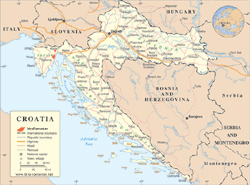
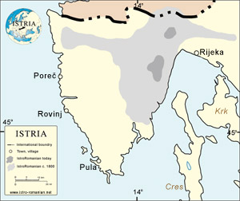

Home
Links
Books
News
Culture
Status
Alphabet
Photos

link to us
copyright
webmaster

croatia, croazia, hrvatska, croația, romania, rumania, rumunjska, românia, istria, istra, učka, monte maggiore, ćićarija, ciceria, brdo, brda, briani, bârdo, kostrčani, costerciani, costârceån, jasenovik, iessenoviza, sucodru, letaj, letai, nova vas, villanova, noselo, šušnjevica, susnieviza, susgneviza, valdarsa, șușnievița, žejane, seiane, jeiăn, kršan, chersano, crâșan, cici, ciribiri, istro-romanian, istro-rumeno, istro-romeno, istro-rumunjsko, istro-română, istro-romanians, istro-rumeni, istro-romeni, istro-rumunj, istro-români, istroromanian, istrorumeno, istroromeno, istrorumunjsko, istroromână, istroromanians, istrorumeni, istroromeni, istrorumunj, istroromâni, istrian vlach, istrian vlachs, vlaši, vlaški
|
|
 "On the slopes of Mount Ćićarjia,1 between Trieste and Rijeka, there are villages whose inhabitants speak a language which is closer to Romanian then Aromanian but which still has sufficient distinctive features to be classed as a dialect of its own. Known by the local inhabitants as Ciribiri and by philologists as Istrian Vlachs, the inhabitants of these villages are both a remarkable linguistic survival and a historical puzzle."
Croatia is home to Europe's smallest linguistic group, the IstroRomanians. They inhabit the north-eastern corner of the Istrian Peninsula in two relatively isolated pockets. North of the Ćićarija Mountains we found the lone village of Žejane (ir. Jeiăn 2) inhabited today by some 140 people. It is here that IstroRomanian has been best preserved, both from a linguistic point of view but also as a mean of communication for the community. Further south, on the western slopes of Mount Učka (it. Monte Maggiore) we find a cluster of IstroRomanian villages and hamlets surrounding the shores of the now drained Lake Čepić. Looking at a map, one may note the wealth of Romanian-sounding names and would rightly conclude that we are in the heartland of IstroRomanian. However, only in a handful of places is the language still alive. The largest of these, is the village of Šušnjevica (ir. Șușńievițe / Susńievița). Further east and south the language is still spoken in Nova Vas (ir. Noselo), Jasenovik (ir. Sucodru), Kostrčani (ir. Costârceån), Letaj (ir. Letai) and Brdo (ir. Bârdo). As it was the case throughout much of the Istrian peninsula, the past fifty years had witnessed a large migration from inland towards the larger costal cities, migration that affects to this day the IstroRomanian community. For this reason, we can nowadays find IstroRomanians in most of the largest cities of Istria, and in greater numbers in Rijeka (it. Fiume), Opatija (it. Abbazia), Pula (it. Pola) and Pazin (it. Pisino).
They are called by most linguists IstroRomanians, a name reflecting both their linguistic affiliation to the larger body of the Romanian language but also the geographical distribution of the population in the Istrian Peninsula. A similar situation exists further south in the Balkan Peninsula, where a small community, speaking yet another dialect of Romanian in a few villages along the Macedonian-Greek border in the Meglen valley, are referred to by linguists as MeglenoRomanians. And just like with this group, the IstroRomanians do not use this rather scientific name for themselves or when referring to the language they speak. Seemingly unaware of their origins, these people may often tell you that they speak po nåșu (in our language) without having an actual name for it. If pressed they will use names given to them by the surrounding population. When asked what he or she might be and speak, an IstroRomanian, may tell you in the south that they are vlåh and their language is called vlåșchi, while in the north, the most common answer will be po jeiånschi. More recently, and under the influence of the numerous linguists visiting from Romania, many IstroRomanians have begun calling themselves rumuni and their language rumunschi. However, this small community is known in the area by many more names: Vlahs, Cici or Ciribiri, to mention just a few.
One important comment ought to be made in regards to the name of this community. While today's IstroRomanians have lost from their vocabulary the self identification of "Romanus" - or a derivate of it - used by most Romanian speaking population in the Balkans, we know thanks to Ireneo della Croce, that this was not always the case. In his Hisoria antica e moderna, sacra e profana della città di Trieste published in 1698, della Croce not only gives us the first historical record of IstroRomanian, but also notes the term used by this population, that of "rumeri". The name, while badly transcribed, follows the changes suffered by most words in IstroRomanians where an intervocalic -n- becomes an -r-. This phenomenon is known as rothacism. We can see therefore how the original romanus, evolved over time into rumânu, becomes in the case of IstroRomanian rumâru/rumâr. It is noted by della Croce as rumer using a transliteration used to this day in Italian 3 to note the rather unusual sound -â-.
Croatia was part of the Austro-Hungarian Empire from 1102 until 1918, and has been heavily influenced by western culture and traditions. The Croats were early converted to Catholicism and adopted the Latin alphabet, unlike the Serbs who have remained mainly Orthodox and use the Cyrillic alphabet. The IstroRomanians living in this area have been heavily influenced by Croat history.
The IstroRomanians in Croatia inhabit a small area in the north-eastern region of the Istrian Peninsula. Since there is no spatial continuity with the Aromanians in the south nor the Romanians to the east they must have settled the area. Most historians believe that the IstroRomanians arrived in this area around the fifteenth century when the Ottoman invasion took place. What is unclear is whether they came from Romania or from Yugoslavia, in which case they would be the last remains of the Vlachs so often mentioned in the Serbian chronicles as inhabiting the region. One possible mention of them dates back to 1329 when they were specifically referred to as Vlachs in one of these chronicles. There is, however, an earlier mention of a Radul, leader in Istria, from the twelfth century, but is unclear whether he was IstroRomanian or not.
This small community numbering no more then 1500 people is listed in The UNESCO Red Book of Endangered Languages as Seriously Endangered. Surprisingly, however, some researchers that went into the area in the 1960's still found little kids speaking the language, giving some hope for its survival, although most experts agree that this will not be the case for long. There is no education in IstroRomanian (mainly because there would not be enough pupils). Similarly, there are no TV or radio broadcasts in this language.
 The IstroRomanians are not recognized as a national minority by the Croatian Constitution. The preamble of the constitution states that "the Republic of Croatia is hereby established as the national state of the Croatian people and a state of members of other nations and minorities who are its citizens: Serbs, Muslims, Slovens, Czechs, Slovaks, Italians, Hungarians, Jews and others [sic], who are guaranteed equality with citizens of Croatian nationality and the realization of ethnic rights in accordance with the democratic norms of the United Nations and countries of free world." The lack of official recognition has resulted in a lack of political goals for the IstroRomanian community. Because of the size of their community, however, it is very unlikely that they would have any political claims. They would like to see, however, efforts being made for the preservation of their language and culture.
Notes
- All geographical names used in this website are written using the official Croatian spelling. When necessary local or dialectical names are noted in parenthesis.
- IstroRomanians names are written in italics. To learn more about the IstroRomanian alphabet and the correct pronunciation of IstroRomanian sounds please click here.
- "Limba română" (Romanian language) is even today written in Italian as "lingua rumena" using the same transliteration to note the sound -â-.
|
|
|
|
Home |
Links |
Books |
News |
Culture |
Status |
Alphabet |
Photos |
© 1999-2016 www.istro-romanian.net. All Rights Reserved.
Last update: May 7, 2016
|
|
|
News
|
 Va jenen dahe prevela Gervaisovu "Pipu" na žejanski April 7, 2016 Va jenen dahe prevela Gervaisovu "Pipu" na žejanski April 7, 2016
U Osnovnoj školi u Čepiću uz nazočnost rumunjskog veleposlanika obilježen Mjesec Frankofonije March 17, 2016
România își reafirmă interesul major pentru românii și românofonii din Croația precum și pentru dialectul istro-român February 26, 2016
Diplomele de excelență ale Asociației Răsăritul Românesc, pe 2015 January 25, 2016
Žejane: zvončari, folklor i istrorumunjski jezik January 10, 2016
Prva zvona ovogodišnjeg Pusta: Već sutra u pola noći zvončari rade tri kruga oko sela January 5, 2016
Dan Stoenescu cere ajutorul Academiei legat de păstrarea dialectelor românești sud-dunărene: aromân, meglenoromân și istroromân. Când va lua Academia poziție față de așa zisa limbă vlahă inventată de sârbi? December 23, 2015
more news ->>
|
|